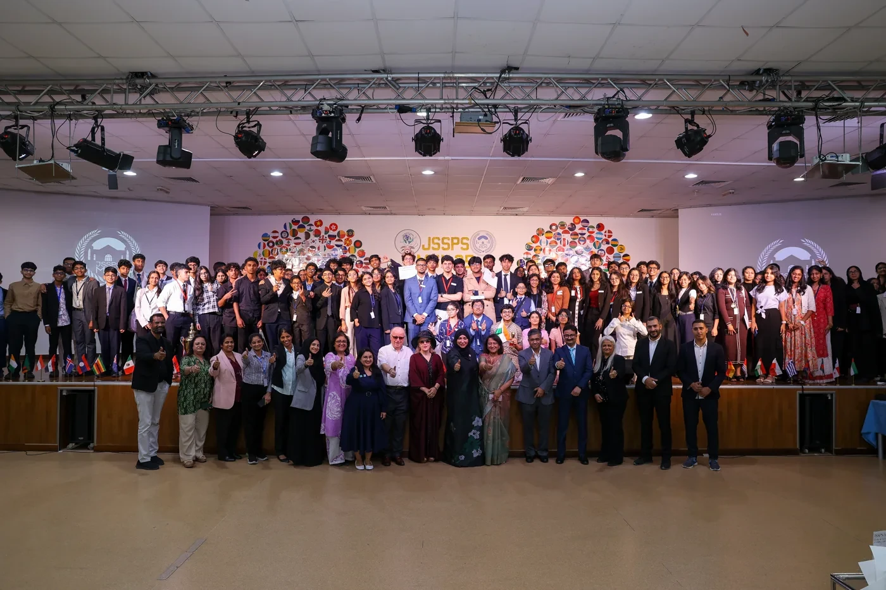
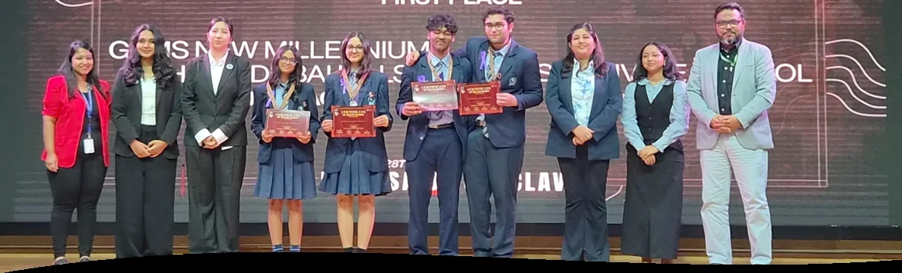

Big ideas.
Brighter futures.
Our Phase 4.
A celebration of the students who ask more, reach further and turn possibility into achievement.
Explore our achievementsGrades 9–12 · JSS Private School

Courage.
Possibility.
Hard work.
Extraordinary outcomes.
From engineering challenges to entrepreneurial ideas, our students are making their mark.

SPARK · GEMS New Millennium
“What if?” is only
the beginning.
A world of possibilities.
A place for every passion.
Explore the programmes helping Phase 4 students become thinkers, creators and changemakers.
Young voices.
Global perspectives.
Across 12 committees, around 300 students from 34 schools came together to debate, negotiate and rebuild trust.
JSSPS Model United Nations · 27–28 September 2025
Inside the conferenceProgress you can see.
In the Grade 9F phenomenon-based learning pilot, curiosity connected subjects—and learning moved forward.
Explore the learning journey ↗Updated results for the Grade 9F pilot cohort.
This is Phase 4.
The conversations, collaborations and celebrations behind the achievements. Select a photo to take a closer look.